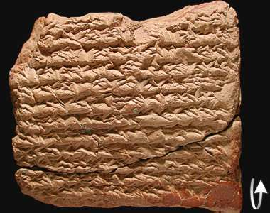

Monthly Text

The front of this tablet describes how on one night, in the 7th month, of the 162nd year, the beginning and middle of the night was cloudy. In the south there was much thunder and lightning and the east wind blew. At the end of the night, the moon was 1 ½ cubits behind the rear Twin star.
On the 19th night, the moon was 1 ½ cubits behind the rear star of the Crab to the south. On the night of the 20th and 21st, clouds were in the sky. On the night of 22nd, clouds were in the sky and the wind blew. At the end of the night, the moon was 1 cubit below the rear foot of the Lion.
Tablet translation
back...
|